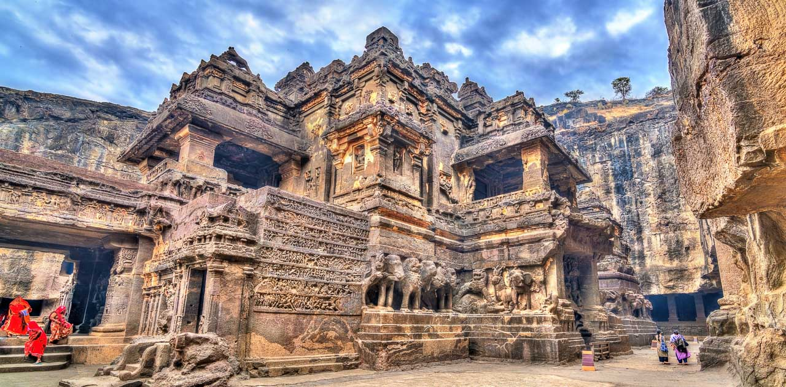
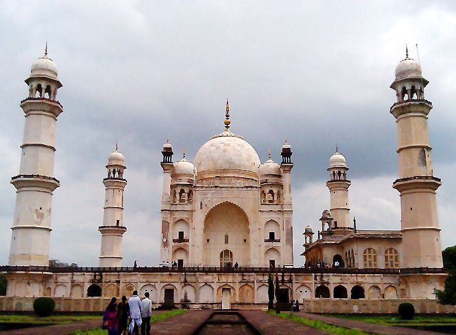
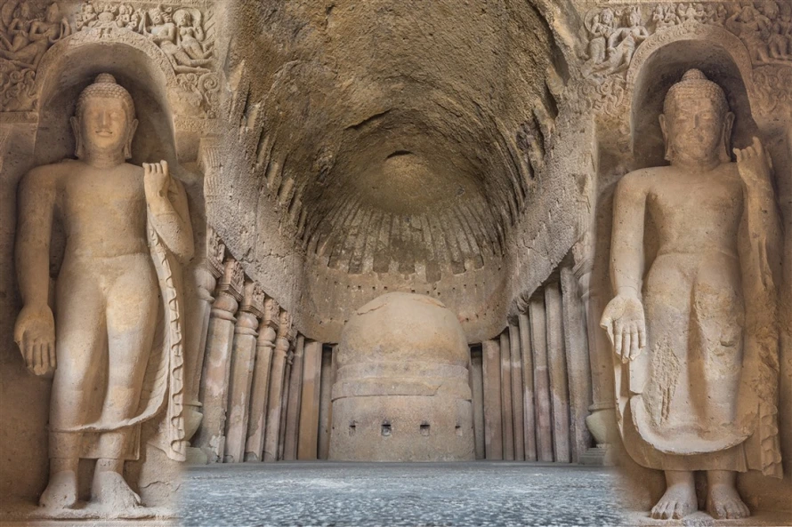
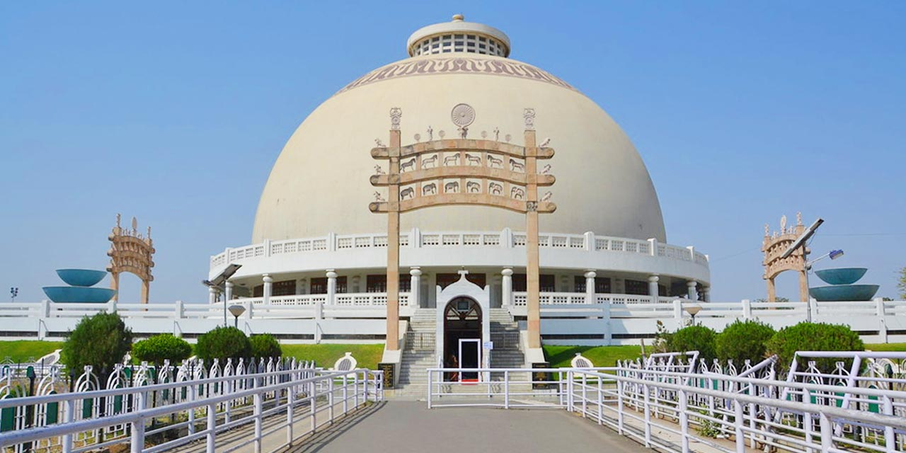
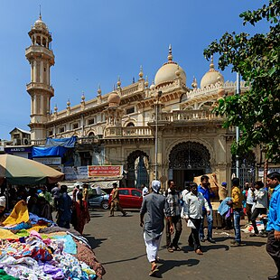
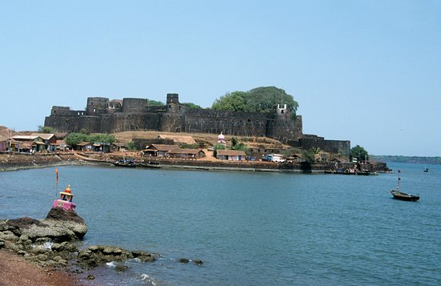
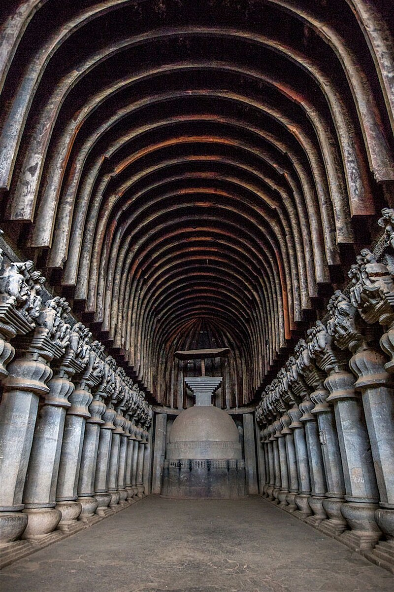

Ajanta Caves
A UNESCO World Heritage Site known for its rock-cut Buddhist cave monuments.


Bibi Ka Maqbara
Bibi Ka Maqbara | Sightseeing In Aurangabad | TimesTravelBibi Ka Maqbara is a 17th century mausoleum in Aurangabad, India, built by Prince Azam Shah to honor his mother, Dilras Banu Begum.

Chhatrapati Shivaji Terminus
The Chhatrapati Shivaji Terminus, formerly known as Victoria Terminus Station, in Mumbai .

Kanheri Caves – Mumbai
Located deep within the Sanjay Gandhi National Park in Mumbai, Kanheri Caves are a group of 109 Buddhist rock-cut monuments dating from the 1st – 10th century A.D .

Elephanta Caves
A collection of cave temples on Elephanta Island in Mumbai Harbour that are dedicated to the Hindu god Shiva .

Aga Khan Palace
The Aga Khan Palace was built by Sultan Muhammed Shah Aga Khan III in the city of Pune, India..

Deeksha Bhoomi Nagpur
The stupa, also called Dhamma Chakra, is a magnificent architectural structure that can hold more than 5,000 people. .

Jama Mosque, Mumbai
The mosque was completed in stages during the 19th century, in the Indo-Islamic style.

Jaigad Fort
a coastal fortification that is located at the tip of a peninsula in Jaigad, Ratnagiri District at a distance of 14 km from the temple town of Ganpatipule

Karla Caves
The Karla Caves, Karli Caves, Karle Caves or Karla Cells, are a complex of ancient Buddhist Indian rock-cut caves at Karli near Lonavala, Maharashtra
Alibag
Alibag, also known as Alibaug, is a coastal city and a municipal council in Raigad district of Maharashtra, India.